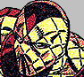
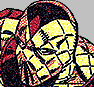
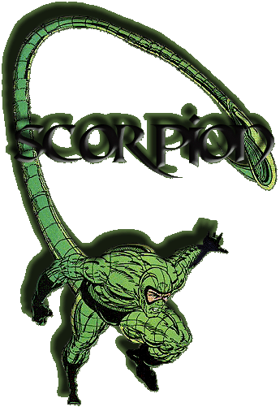
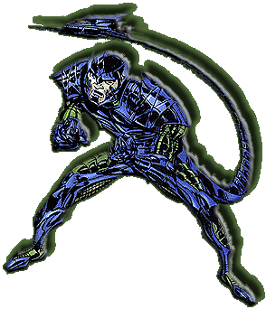
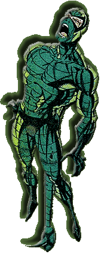

Name: MacDonald "Mac" Gargan
ID: Secret
Relatives: Unknown
Affiliates: Former member of the Masters Of Evil III...Ally of Mr. Hyde, Justin Hammer, Chameleon, Terrible Tinkerer
Enemies: Spider-Man, J. Jonah Jameson, Captain America, S.H.I.E.L.D., Falcon, Ms. Marvel, Justin Hammer, Blacklash, Rhino, Alpha Flight, Black Cat, Cardiac
Powers: The Scorpion has Superhuman Strength, Speed, Agility & Stamina...He has a battlesuit constructed of two layers of steel mesh with one layer of insulated rubber within...His main weapon is that of a 7 foot long tail, designed by the Terrible Tinkerer, which is cybernetically controlled. The tail can whip up speeds up to 100 feet per second and can spring up to distances of up to 30 feet. The tip of his tail has a spike that can emit acid or fire force blasts...The Scorpion can also use his tail for help in transporting himself using it as a extra leg.
Origin: Mac gained the powers of the Scorpion after Chemical and Radiological treatments from Dr. Farley Stillwell...The treatments caused a mutagenic change in Mac and with the addition of his battlesuit and tail created by the Terrible Tinkerer, the Scorpion was born!
| 1st
App.:
Amazing Spider-Man #20 (As Mac Gargan) Amazing Spider-Man #19 Spider-Man
Appearances:
Amazing Spider-Man #20, 29,
145, 146, 318, 319, 342, 343, 370, V2 #1 & Annual
18...Spectacular Spider-Man #21, 215 & 216...Web Of
Spider-Man #107 & 108...Marvel Team-Up
#106...Spider-Man Unlimited #1, 13 & 22...The
Shroud #1-4...What-If? V2 #61, 82 & 99...Spider-Man: Sweet
Charity #1 Other Appearances: Captain America #122, 151, 152, 412 & 413...Daredevil #82 & 83 (Cameo)...Ms. Marvel #1 & 2...Avengers #222...Alpha Flight #79 & 80...DC/ Marvel All Access #2 (Cameo) & 3...Code Of Honor #4 (Cameo) |
 |
|  |
Spider-Man Fear Rating: 8 (out of 10) |